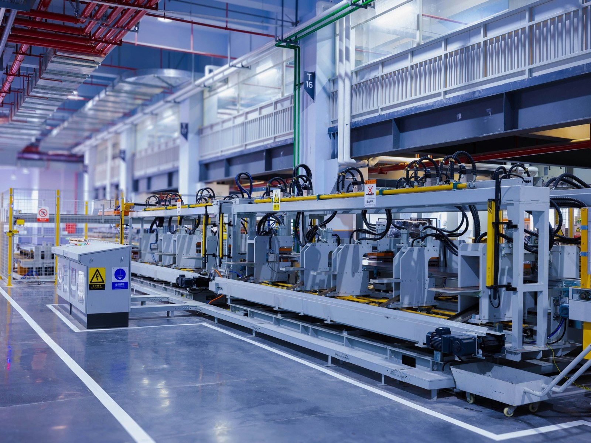

願景VISION
讓世界的調控技術
更智慧、更安全、更可靠。
Make control systems smarter, safer, and more reliable.
About CTRLIX
CTRLIX = ConTRoL + Intelligence + eXperience
由擁有多年產品開發經驗的團隊組成，利用物理 AI 的特點，創造出全新一代的產品。
我們相信，調控能力不只是一項技術，更是發揮產品性能、確保安全與提升產品使用體驗的關鍵。我們以科學模型為基礎，結合精準感測、資料分析與人工智慧，打造能理解環境、預測變化、並自主調整的調控系統──溫度、壓力、流量、材料反應或其他動態環境皆可應用。
願景VISION
讓世界的調控技術
更智慧、更安全、更可靠。
Make control systems smarter, safer, and more reliable.
使命MISSION
用科學理解世界，
用 AI 重塑控制。
Understand the world through science and reshape control through AI.
What is physics AI
傳統 AI 需要大量數據，硬體成本高、資料蒐集困難，很難真正落地。物理 AI 把科學家與工程師歸納的自然法則放進模型，只要少量數據就能準確判斷與控制。
科學家、工程師統整的
大自然法則
大量數據分析
統整的法則
結合前人智慧與
現代技術的法則
| 比較項目 | 物理 AI 模型 | 生成式 AI 模型 | 數據分析 AI 模型 |
|---|---|---|---|
| 數據量 | 小（約 100 筆） | 大（約 100 萬筆） | 中（約 1 萬筆） |
| 記憶體量 | 小（約 100 KB） | 大（約 100 GB） | 中（約 100 MB） |
| 成本 | 低 | 高 | 中 |
| 優勢 | 物理法則教導 AI，落地於現實世界 | 創造新的想像 | 遵循數據規則 |
| 限制 | 須具備可被推斷的物理定律 | 容易產生錯誤內容 | 只能依賴過去資料 |
Sensing applications
只要產品裡有溫度、氣體、壓力、光線、電流電壓或流體流量的變化，就能用物理 AI 感測解讀現況、預測變化，並自動調整。點選感測類型，查看應用流程。
How we work together
Development process
從客戶需求出發，經過痛點分析，提出以物理 AI 解決問題的方案。
01客戶需求
02痛點分析
03物理 AI 提案
從手繪草圖到可測試的實驗樣品，用數據證明物理 AI 方案可行。
01草圖
02Demo
03規劃實驗樣品
04實驗樣品測試
05實驗樣品測試報告
15 年以上經驗的機構工程師與工業設計師同步作業，從外觀造型一路走到量產工程圖與模具。
01工業設計圖
02機構設計圖
03工業設計樣品
04量產工程圖
05模具（量產）
整合感測器與控制電路，把物理 AI 模型嵌入小巧、低成本的控制單元。
01感測器整合
02測試電路設計
03PCB 佈局
04物理 AI 控制單元
以物理修正的 AI 讀取數據，最後轉成使用者看得懂的報告。
01傳統機器學習
02物理 AI 神經網路
03邏輯分類
04UI/UX 軟體設計
提供特約供應鏈合作，小量樣品試產、協助完成安規驗證，批量正式量產。

讓我們陪你的產品Case studies
從餐飲家電、重工業到醫療輔具，我們把物理 AI 帶進不同產業。點選案例，看我們如何一步步把技術做成產品。
Recognition